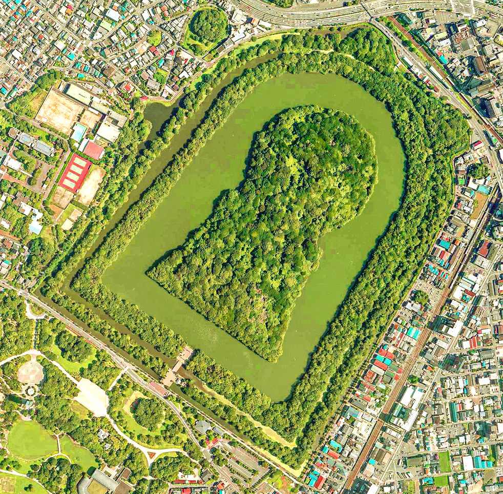
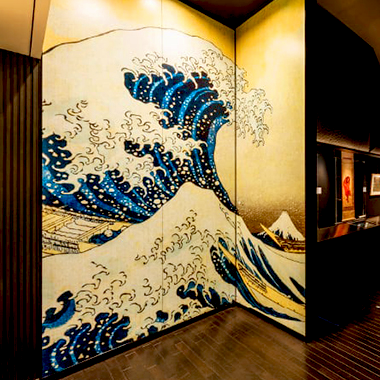
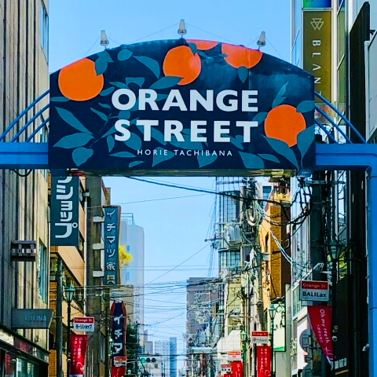
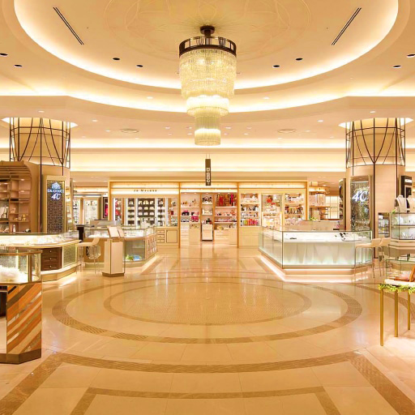
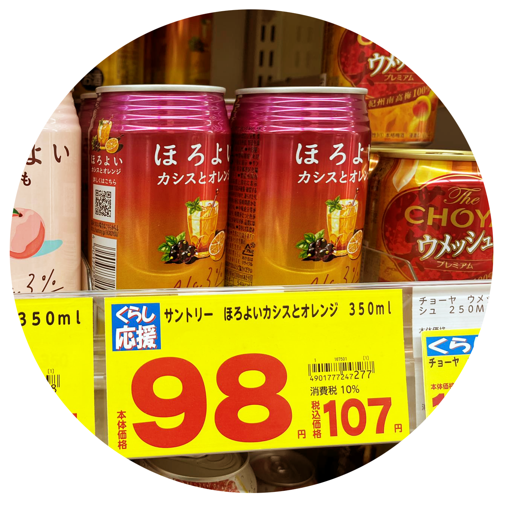
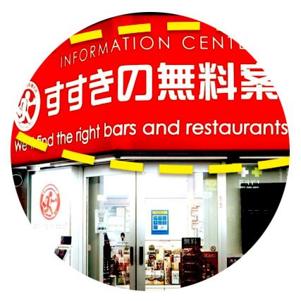

당신의 특별한 오사카 여행을 보다 편하게 누릴 수 있도록.
당신의 특별한 오사카 여행을 보다 편하게 누릴 수 있도록.
오사카의 전통, 문화는 물론 쇼핑 관광지까지 라인을 눌러 한눈에 확인하세요!
오사카 성 " 도요토미 히데요시의 권력 상징 " 도요토미 히데요시에 의해 1583년 만들어진 성으로 나고야성, 구마모토성과 함께 일본의 3대 명성으로 꼽힙니다. 이후 도요토미 히데요시 사후, 세키가하라 전투나 세계대전 등 여러 전투로 인해 자주 소실되어 가장 최근에는 1931년 복구되었습니다. 천수각 내부에서는 히데요시 시기의 갑옷, 무기 등 다양한 자료들을 관람하거나, 전망대에 올라가 오사카 시내를 내려다 볼 수 있습니다. 오사카 주유패스를 구매하셨다면, 천수각 입장과 고자부네 뱃놀이를 무료로 이용하실 수 있습니다! |
|---|
|  | 다이센 고분 " 어마어마한 규모의 무덤 " 다이센 고분은 5세기경에 만들어진 것으로 추정되는 거대한 전방후원분 무덤입니다. 현재도 해당 무덤의 주인이 누구인지에 대해서 학계에서는 의견이 분분합니다. 한때. 16대 닌코쿠 천황의 무덤이라는 가설이 존재하였는데 확실히 밝혀진것은 아닙니다. 전방후원분의 내부 섬은 현재 들어갈 수 없고, 주위의 해자를 따라 조성된 산책로를 거닐어볼 수 있습니다. |
|---|
|  | 오사카 우키요에 미술관 " 으뜸가는 우키요에 작품들을 감상할 수 있는 박물관 " "가나가와 해변의 높은 파도 아래" 는 세계적으로 유명한 작품으로, 아마 관광객 여러분들도 보신 적이 있을겁니다. 놀랍게도 이 작품의 원본은 현재 오사카 우키요에 미술관에서 전시하고 있습니다. 우키요에는 인상파 화가들에게 깊은 영향을 주어 그들의 작품에도 등장하는 에도시기에 시작된 판화입니다. 지금 오사카 우키요에 박물관에서 우키요에의 역사를 알아보고 다양한 작품들을 감상할 기회를 가져보세요! |
|---|
 | 오사카 역사 박물관 " 생생히 느껴보는 유구한 오사카의 역사 " 오사카를 여행하면서 , 오사카의 문화와 역사에 관심을 가지게될 수 있습니다.. 그럴 땐, 1400년의 오사카 역사를 생생히 담아놓은 오사카 역사 박물관이 제격입니다. 오사카 역사 박물관은 과거 의복과 궁전, 생활상들을 재현해둔 다양한 콘텐츠로 여행자들을 매료하기에 충분합니다. 오사카 주유 패스를 구매하셨다면, 박물관의 입장료는 무료입니다! |
|---|
|  | 오렌지 스트릿 " 힙한 편집샵 & 셀렉샵의 거리 " 요츠바시 지역에 위치한 오렌지 스트릿은 오사카 최대의 편집샵 & 셀렉샵이 모여있는 거리입니다. 마치 한국의 가로수길과 비슷한 느낌을 가지고 있는 이곳은 젊은 사람들과 많은 관광객으로 붐빕니다. 꼼데가르송, 슈프림, 베이프 등.. 인기있는 브랜드의 제품을 만나러 가보는건 어떨까요? 곳곳의 숨겨진 맛집과 작은 카페들도 이곳의 매력을 더해줍니다. |
|---|
|  | 우메다 지역 백화점 " 오사카 고급 쇼핑의 핵심지 " 일본에 왔으면, 면세와 외국인 혜택을 받는 쇼핑을 빼놓을 수 없습니다. 좀 더 고급스럽고, 하이한 쇼핑을 원한다면 우메다의 백화점에 가야할 것 입니다. 이곳은 한큐, 다이마루 백화점과 각종 쇼핑몰이 모여있는 쇼핑의 천국입니다. 한큐 백화점 1층에서 브랜드 손수건을 구매해보세요! 폴로, 비비안 웨스트우드 등 손수건을 합리적인 가격으로 구매할 수 있습니다. |
|---|
| 여행 중 주의할 점 | ||
|---|---|---|
|  |  | |
| 가격표를 볼 때, 소비세를 확인하기 | 항상 현금 여유분을 가지고 다니기 | 불건전 업소 조심하기 |
| 일본에서는 소비세가 포함된 가격, 일반 가격을 구분합니다. 면세 대상이 아니라면, 소비세 포함 가격으로 체크해주세요! | 일부 가게들에서는 아직 현금결제만 고수하기도 합니다. 이런상황에 대비해, 항상 여분의 현금을 지니고 여행하세요! | 화려한 간판에 Information이라고 적힌 가게를 조심하세요! 정보센터로 위장한 불건전 업소입니다! |